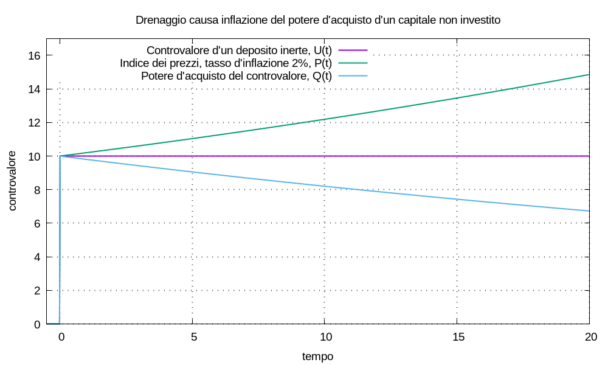
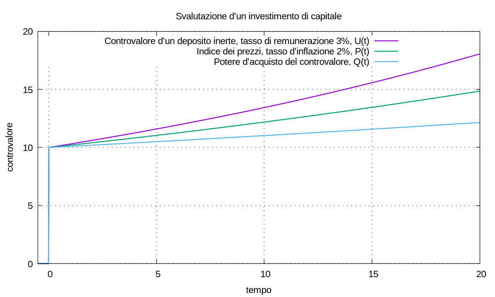

L’inflazione è il fenomeno economico dell’aumento dei prezzi; cerchiamo di comprenderlo con un esempio.
Esempio (della mamma e delle pere) È normale che il prezzo delle pere aumenti nel tempo; se diminuisse sarebbe una sorpresa; può succedere, ma raramente. Mettiamoci nei panni della mamma.
- Oggi All’istante t0 = 0 la mamma va al mercato con C0 = 10,00 eur per comprare delle pere; ogni pera costa 0,79 eur; quante pere può comprare la mamma? La risposta è:
(numero pere oggi) = (soldi oggi) ÷ (prezzo oggi) == 10 ÷ 0,79 ≈ 12,658227848101266- Tra un anno All’istante t1 = 1 la mamma andrà al mercato con C1 = 10,00 eur per comprare delle pere; nel frattempo il prezzo delle pere sarà aumentato del 2%, quindi ogni pera costerà:
(prezzo tra un anno) = (prezzo oggi) × (coefficiente incremento prezzo) == 0,79 × (1 + 2 ÷ 100) = 0,8058denominiamo la quantità Ppere = 1 + 2 ÷ 100 indice del prezzo delle pere valutato nell’istante “tra un anno” a partire dall’istante “oggi”; quindi possiamo scrivere:
(prezzo tra un anno) = (prezzo oggi) × (indice prezzo pere)Quante pere potrà comprare la mamma? La risposta è:
(numero pere tra un anno) = (soldi tra un anno) ÷ (prezzo tra un anno) == (soldi tra un anno) ÷ [ (prezzo oggi) × (indice prezzo pere)]= 10 ÷ 0,8058 = 10 ÷ [0,79 × (1 + 2 ÷ 100)] ≈ 12,410027302060064e risulta:
(numero pere tra un anno) < (numero pere oggi)Osserviamo che possiamo riformulare l’espressione per il calcolo del numero di pere acquistabili tra un anno come segue:
(numero pere tra un anno) == (soldi tra un anno) ÷ [ (prezzo oggi) × (indice prezzo pere)] == [(soldi tra un anno) ÷ (indice prezzo pere)] ÷ (prezzo oggi)= 10 ÷ [0,79 × (1 + 2 ÷ 100)] = [10 ÷ (1 + 2 ÷ 100)] ÷ 0,79poniamo ηpere = 2%, tasso annuale di variazione del prezzo delle pere nel periodo tra t0 = 0 e t1 = 1 di durata t1 - t0 = 1; possiamo scrivere:
1 + 2 ÷ 100 = 1 + ηpere = esp[log(1 + ηpere)] = esp[log1p(ηpere)] == esp(λpere) = esp[λpere (t1 - t0)]allora la quantità:
10 ÷ (1 + 2 ÷ 100) = C1 ÷ (1 + ηpere) = C1 ÷ esp[λpere (t1 - t0)]= C1 × esp[- λpere (t1 - t0)] = C1 esp[λpere (t0 - t1)]si può interpretare come: il capitale C1 all’istante t1, attualizzato all’istante t0 = 0 secondo il tasso d’aumento dei prezzi delle pere ηpere.
Proviamo a considerare il fenomeno dell’inflazione nel seguente modo, ne analizzeremo criticamente le conseguenze nella nostra vita futura: supponiamo d’entrare oggi nell’attività economica del vendere prodotti; il prezzo di tali prodotti aumenterà nel tempo futuro a causa delle dinamiche economiche che causano inflazione; in un certo senso: la possibilità di vendere a prezzi crescenti nel futuro è una forma di remunerazione per noi.
Di conseguenza, nell’analisi di vari scenari economici: potremo ipotizzare l’esistenza di vari indici dei prezzi, associati a selezioni di prodotti detti panieri, con forma matematica:
P(t) = esp[λinflazione (t - t0)]
rappresentante l’aumento dei prezzi del paniere a partire dall’istante t0; il coefficiente λinflazione = log1p(ηinflazione), con ηinflazione ⋛ 0, è una componente della remunerazione di chi vende i prodotti del paniere. Nell’esempio della mamma l’indice dei prezzi delle pere risulta:
Ppere(t) = esp[λinflazione pere (t - t0)]
con λinflazione pere = log1p(ηinflazione pere) = log1p(2%).
Riassumiamo per definire le figure di merito che c’interessano. All’istante t0 impieghiamo un capitale C0 in un’attività economica il cui controvalore possa essere modellizzato da un multimetro di remunerazione λimpiego = log1p(ηimpiego); la movimentazione risulta:
M(t) = C0 δ(t - t0)
ne consegue il controvalore:
U(t) = C0 u(t - t0) esp[λimpiego (t - t0)]
supponiamo che per t ≥ t0 abbia senso considerare un indice dei prezzi (di ciò che acquistiamo per condurre l’attività) modellizzato da una funzione esponenziale con remunerazione λinflazione = log1p(ηinflazione):
P(t) = esp[λinflazione (t - t0)]
questa inflazione è una componente di remunerazione per chi ci vende prodotti.
Definiamo potere d’acquisto Q(t) del controvalore U(t) il controvalore stesso al generico istante t attualizzato all’istante t0 con il tasso d’inflazione tra t0 e t:
Q(t) = U(t) ÷ P(t) =
= U(t) ÷ esp[λinflazione(t - t0)] = U(t) × esp[- λinflazione(t - t0)] =
= U(t) esp[λinflazione(t0 - t)]
che è effettivamente un’espressione d’attualizzazione verso l’istante t0 di ciò che accade all’istante t. Semplificando:
Q(t) = C0 u(t - t0) esp[(λimpiego - λinflazione) (t - t0)] = C0 u(t - t0) esp[λpotere (t - t0)]
da cui:
λpotere = λimpiego - λinflazione = log1p(ηimpiego) - log1p(ηinflazione)
Supponiamo di conoscere: controvalore futuro d’un capitale, prezzi d’oggi d’alcuni prodotti, tasso d’inflazione dei prodotti stessi; se vogliamo calcolare quanti prodotti potremo acquistare in futuro, abbiamo due procedure equivalenti a disposizione:
Osservazione Consultando Wikipedia scopriamo che lo sviluppo in serie di log1p(η) approssimato con il primo addendo, per valori di η prossimi allo zero, risulta:
log1p(η) ≈ ηe quindi, approssimativamente:
λpotere ≈ ηimpiego - ηinflazioneper valori di ηimpiego e ηinflazione prossimi allo zero. Esempio:
log1p(0,03) - log1p (0,02) ≈ 0,00975617 0,03 - 0,02 = 0,01non è un granché come approssimazione…
Esempio (deposito inerte) Immaginiamo di depositare un capitale di 10,00 eur in un deposito inerte; assumiamo che, per calcolare il suo potere d’acquisto, abbia senso considerare un indice dei prezzi con tasso annuale del 2%; è la situazione della mamma e delle pere. Il calcolo del potere d’acquisto è nel seguente grafico.

Esempio (investimento) Alternativamente investiamo 10,00 eur in un deposito remunerato con tasso annuale ηinvesto = 3%; assumiamo ancora che, per calcolare il suo potere d’acquisto, abbia senso considerare un indice dei prezzi con tasso annuale del 2%. Il calcolo del potere d’acquisto è nel seguente grafico.
